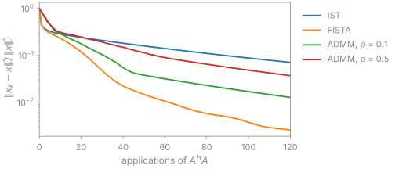

Solvers#
TL;DR
The terms decide the solver: CG for quadratic terms only, FISTA for one term with a proximal operator on the image, ADMM or the primal-dual method for a term on \(Gx\) or several terms, IRGNM for a nonlinear model.
pics()makes this choice when you name no solver, as BART’spicsdoes.Divide the data by
data_scaling()so that a weight carries over between datasets.
A solver of bartorch.optim minimizes
\(\tfrac12\lVert Ax-y\rVert_2^2 + \lambda\,g(Gx)\) for an encoding \(A\) and the
terms of Regularizers, and is called as solver(y, A). You choose it
from the terms, then its step size or penalty parameter and its iteration
count. Each solver also exists as a step block, for a loop of your own or an
unrolled network. Lesson 6 of the Course runs
FISTA by hand and reproduces pics with it.
Capabilities#
Runs BART’s IST, FISTA, ADMM and primal-dual iterations, with BART’s step sizes, penalty updates and stopping rules.
Code:
bartorch.optim. Tests: ist is barts ist; fista is barts fista; admm is barts admm; pridu is barts pridu (test_optim_iterators.py).Solves quadratic penalties, generalized Tikhonov included, by conjugate gradients, and refuses a proximal term there.
Code:
CG,Tikhonov. Tests: a quadratic penalty is the normal equations it claims; cg takes quadratic terms and not proximal ones (test_solve.py).Chooses the iteration from the terms in
apps.pics, as BART’spicschooses it.Code:
_choseninapps/_pics.py. Tests: the iteration is the one the terms choose; the app is the tool to the last bit (test_apps.py).Refuses a term on a transform in IST and FISTA, which BART would threshold on the image instead.
Code:
_refuse_transforminoptim/_blocks.py. Tests: the thresholding iterations refuse a term over a transform; the proximal iterations take one term (test_optim_iterators.py); a first term over a transform is not thresholded on the image (test_apps.py).Estimates the largest eigenvalue of the normal operator by power iteration, and divides the step by it on request.
Code:
maxeigen(),eigen=True. Tests: the largest eigenvalue is the operator the step divides by; the step is divided by the estimate (test_optim_iterators.py).Estimates the data scaling BART’s reconstructions divide by, on a grid and along a trajectory.
Code:
data_scaling(). Tests: the estimated scaling is the one the tool estimates; the scaling for a trajectory is the other branch (test_solve.py).Counts ADMM’s
maxiterin inner conjugate-gradient iterations, as BART does.Code:
ADMM. Tests: barts budget is inner applications and not outer steps (test_optim_iterators.py).Exposes each iteration as a block with
start, a step andoutput, whose loop is the solver.Code:
FISTABlockand the other blocks. Tests: a stack with nothing learned is the solver to the bit (test_optim_blocks.py).Solves a nonlinear model by IRGNM, with any of these solvers inside each Gauss-Newton step.
Code:
IRGNM. Tests: the python loop with conjugate gradients is the library to the last bit; a proximal inner solver reaches the same answer at no threshold (test_nlop_irgnm.py).
Division of responsibility#
BART: the iterations, their step and penalty rules, the power iteration and the scaling estimate, configured through
italgo_configandlsqr2aspicsconfigures them.bartorch: the solver objects and step blocks, the choice in
apps.pics, and the refusals of what BART would assert on or compute silently wrong.BlochSim: the signal models IRGNM fits (Model-based reconstruction).
Method#
Your terms |
Solver |
Each iteration costs |
|---|---|---|
one application of \(A^HA\) |
||
One term with \(G = I\): |
one \(A^HA\) and one proximal operator |
|
A term on \(Gx\) (total variation, Fourier \(\ell_1\), Laplace), several terms, or TGV |
ADMM: a CG solve with \(A^HA + \rho\sum_j G_j^HG_j\); PRIDU: \(A\), \(G_j\) and their adjoints, no inner solve |
|
A forward model nonlinear in the unknowns |
a linear solve per Gauss-Newton step |
FISTA applies the proximal operator to the image after each gradient step on the
data term, so it cannot take a term \(g(Gx)\) whose proximal operator is not one
of the image. BART’s pics hands its IST and FISTA no transform and would
threshold the image itself; bartorch raises an error instead. ADMM introduces
\(z_j = G_jx\) and alternates a least-squares update of \(x\), a proximal step on
each \(z_j\) and a dual update, which is what lets it take any \(G_j\) and any number
of terms.


The figure solves one problem, a \(64^2\) phantom from four coils with about a
third of the phase encodes and a Haar wavelet term, with the step blocks of
bartorch.optim. On a term FISTA takes, FISTA reaches 1 % of the minimizer
after 62 applications of \(A^HA\); after 120, ADMM is at 1.3 % with \(\rho = 0.1\)
and 3.7 % with \(\rho = 0.5\), and IST at 7 %. ADMM is the solver for the terms
FISTA cannot take, not a faster alternative to it.
Step size#
The gradient of the data term is Lipschitz continuous with constant
\(L = \lambda_{\max}(A^HA)\), and IST and FISTA converge for steps up to \(1/L\).
Their default step, BART’s, is 0.95 and is not divided by \(L\); it suits
Cartesian SENSE with a unitary FFT, a binary pattern and sensitivities of unit
root sum of squares, where \(L\) is at most one (0.998 for the problem in the
figure, from maxeigen()). For another encoding, a
non-Cartesian one in particular, pass eigen=True, which divides the step by
a 30-iteration power estimate of \(L\), as pics -e does. The power iteration
starts from a random vector, so two such runs agree to its convergence and not
to the bit. ADMM has no step; its penalty \(\rho\) sets its speed, as the figure
shows.
Data scaling#
\(\lambda\) has units: scaling the data and the image by \(c\) scales the data
term by \(c^2\) and an \(\ell_1\) or TV term by \(c\), so the same weight balances the
two differently. BART’s reconstructions therefore divide the data
by an estimate of its scale before iterating, and a weight is chosen for the
divided data. data_scaling() is that estimate: on a grid,
the 90th percentile of the magnitudes of the root-sum-of-squares image of the
fully sampled k-space centre (at most 32 samples per axis), or their maximum
when it exceeds that percentile by twice the percentile’s distance from the
median; with an encoding A, the same rule on
\(\lvert A^Hy\rvert\). pics() divides by it unless you pass
scaling, and multiplies the image back by it, as pics -S does, so that the
image is in the units of the data; rescale=False returns the image of the
divided data.
Bayesian interpretation#
With complex Gaussian noise, white after prewhitening, the data term is the negative log-likelihood up to a constant, and \(\lambda g(Gx)\) is the negative logarithm of a prior density, so the minimizer is a maximum a posteriori estimate.[4] A Gaussian prior on \(x\) gives the \(\ell_2\) term, a Laplace prior on wavelet coefficients the wavelet \(\ell_1\) term, and a Laplace prior on the gradient magnitude total variation.
The least-squares problem, its conditioning, early stopping of CG and the convergence conditions of each iteration are in Regularized least squares.
Examples#
6. Custom encoding and solver:
picsassembled from an operator, a term and FISTA, and FISTA run block by block.5. Choosing a regularizer:
apps.picswith Tikhonov, wavelet and total-variation terms.Optimization: every solver, step block and its settings.